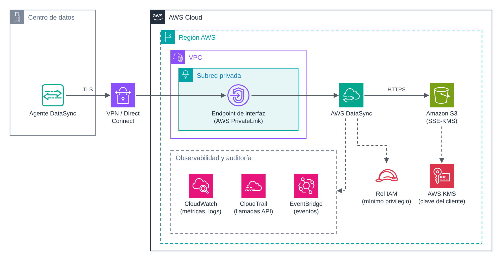

UD5 · 7. Seguridad, monitorización y auditoría de las transferencias¶
1. Introducción¶
Una transferencia de datos es uno de los momentos de mayor exposición de la información: los datos salen de su entorno habitual, atraviesan redes y llegan a sistemas nuevos. Por eso, la seguridad y la supervisión no son un añadido final, sino parte del diseño desde el principio.
Este documento reúne, de forma transversal a todos los servicios de la unidad, los mecanismos que garantizan que la información solo viaja entre los orígenes y destinos autorizados, que lo hace cifrada y que cada operación queda registrada y supervisada.
Objetivos¶
- Aplicar cifrado en tránsito y en reposo a una transferencia.
- Definir permisos con el principio de mínimo privilegio.
- Establecer conectividad privada con AWS mediante VPN, Direct Connect y endpoints de VPC.
- Supervisar las transferencias con CloudWatch y EventBridge, y auditarlas con CloudTrail.
2. Arquitectura de referencia¶

Figura 6. Transferencia privada con AWS DataSync: el agente se conecta mediante VPN o Direct Connect a un endpoint de interfaz de la VPC; los datos se cifran con una clave de KMS y la actividad se registra en CloudWatch, CloudTrail y EventBridge.
La arquitectura aplica defensa en profundidad, con controles en cuatro capas:
| Capa | Control | Elemento de la figura |
|---|---|---|
| Red | Conectividad privada y sin exposición a Internet. | VPN o Direct Connect y endpoint de interfaz. |
| Identidad | Permisos mínimos para cada servicio. | Rol IAM. |
| Datos | Cifrado en tránsito y en reposo. | TLS y SSE-KMS. |
| Supervisión | Métricas, eventos y registro de la actividad. | CloudWatch, EventBridge y CloudTrail. |
3. Cifrado¶
3.1. En tránsito¶
| Servicio | Mecanismo |
|---|---|
| AWS CLI y Amazon S3 | HTTPS (TLS). |
| AWS DataSync | TLS entre el agente y el servicio. |
| AWS Transfer Family | SSH (SFTP), TLS (FTPS) o firma y cifrado de mensajes (AS2). FTP no cifra. |
| Conexión entre redes | IPsec en la VPN; Direct Connect puede reforzarse con VPN o cifrado MACsec. |
Para impedir cualquier acceso sin cifrar a un bucket, se añade una política que deniega las peticiones que no usan TLS:
{
"Version": "2012-10-17",
"Statement": [{
"Sid": "DenegarSinTLS",
"Effect": "Deny",
"Principal": "*",
"Action": "s3:*",
"Resource": [
"arn:aws:s3:::ud5-destino-<iniciales>",
"arn:aws:s3:::ud5-destino-<iniciales>/*"
],
"Condition": { "Bool": { "aws:SecureTransport": "false" } }
}]
}
3.2. En reposo¶
- Amazon S3 cifra todos los objetos nuevos por defecto con SSE-S3 (claves gestionadas por S3).
- Cuando se requiere control sobre las claves, rotación propia o auditoría de su uso, se utiliza SSE-KMS con una clave administrada por el cliente en AWS KMS. Activar las claves de bucket (S3 Bucket Keys) reduce el número de llamadas a KMS y, con ello, su coste.
- Amazon EFS y Amazon RDS permiten activar el cifrado en reposo al crear el recurso.
# Cifrado por defecto del bucket con una clave de KMS y clave de bucket activada
aws s3api put-bucket-encryption --bucket ud5-destino-<iniciales> \
--server-side-encryption-configuration '{"Rules":[{"ApplyServerSideEncryptionByDefault":{"SSEAlgorithm":"aws:kms","KMSMasterKeyID":"<arn-clave-kms>"},"BucketKeyEnabled":true}]}'
4. Control de acceso¶
El principio de mínimo privilegio implica que cada servicio y cada usuario reciba solo los permisos imprescindibles:
- DataSync accede al bucket mediante un rol IAM. Ese rol debe limitarse al bucket y al prefijo de destino, y a las acciones necesarias (listar, leer, escribir).
- Transfer Family asigna a cada usuario un rol y, opcionalmente, una política de sesión que lo restringe a su carpeta.
- Las políticas de bucket pueden limitar el acceso a determinados roles, a un endpoint de VPC concreto (condición
aws:SourceVpce) o a conexiones cifradas. - Las políticas de clave de KMS controlan quién puede cifrar y descifrar con cada clave.
En el Learner Lab no se pueden crear roles IAM; se utiliza el rol predefinido
LabRole, que tiene permisos amplios. En los informes de práctica se pide describir qué permisos mínimos tendría el rol en un entorno real.
5. Conectividad privada¶
| Mecanismo | Descripción | Uso en la unidad |
|---|---|---|
| VPN de sitio a sitio | Túnel IPsec cifrado a través de Internet entre la red local y la VPC. | Conexión del centro de datos con AWS. |
| AWS Direct Connect | Conexión física dedicada entre la red local y AWS, con ancho de banda y latencia predecibles. | Migraciones grandes y flujos híbridos permanentes. |
| Endpoint de puerta de enlace para S3 | Permite que los recursos de la VPC accedan a S3 sin salir a Internet. Sin coste adicional. | Acceso privado de instancias EC2 a S3. |
| Endpoint de interfaz (AWS PrivateLink) | Interfaz de red con IP privada en una subred, que da acceso privado a la API de un servicio. | DataSync con endpoint de VPC. |
| Grupos de seguridad | Cortafuegos con estado aplicado a las interfaces de red. | Restringir el tráfico al destino de montaje de EFS o a las IP de cada socio en Transfer Family. |
La combinación de VPN o Direct Connect con un endpoint de interfaz garantiza que los datos viajan desde el origen hasta el servicio sin pasar por Internet.
6. Monitorización¶
6.1. Métricas y registros¶
| Servicio | Métricas principales en CloudWatch | Registros |
|---|---|---|
| AWS DataSync | Bytes y ficheros preparados, transferidos y verificados. | CloudWatch Logs e informes de tarea en S3. |
| AWS Transfer Family | Bytes y ficheros de entrada y salida; ejecuciones de flujos. | Registros estructurados de sesión en CloudWatch Logs. |
| Amazon S3 | Tamaño del bucket, número de objetos y, opcionalmente, métricas de peticiones. | Registros de acceso al servidor. |
Sobre estas métricas se definen alarmas de CloudWatch, por ejemplo cuando no se ha transferido ningún byte en el periodo esperado.
6.2. Eventos y notificaciones¶
Amazon EventBridge recibe los cambios de estado de los servicios y permite reaccionar ante ellos. La siguiente regla detecta las ejecuciones de DataSync que terminan con error, para enviarlas, por ejemplo, a un tema de Amazon SNS que notifique por correo electrónico:
{
"source": ["aws.datasync"],
"detail-type": ["DataSync Task Execution State Change"],
"detail": { "State": ["ERROR"] }
}
7. Auditoría¶
- AWS CloudTrail registra las llamadas a la API de AWS: quién creó o modificó una tarea de DataSync, un usuario de Transfer Family o una política de bucket, cuándo y desde dónde. Por defecto registra los eventos de administración; los eventos de datos de S3 (lectura y escritura de objetos) deben activarse expresamente.
- Los informes de tarea de DataSync y los registros de Transfer Family documentan qué ficheros se transfirieron, por quién y con qué resultado.
- Los registros de acceso al servidor de S3 recogen cada petición recibida por el bucket.
Estos registros constituyen la evidencia de que la transferencia se ha realizado únicamente entre los orígenes y destinos especificados, tal como exigen los criterios RA5.e y RA6.d.
8. Lista de comprobación¶
| Control | Comprobado |
|---|---|
| Los datos viajan cifrados (TLS, SSH o IPsec). | ☐ |
| El destino cifra los datos en reposo (SSE-S3 o SSE-KMS). | ☐ |
| El bucket deniega las peticiones sin TLS y bloquea el acceso público. | ☐ |
| Los roles y usuarios tienen solo los permisos necesarios. | ☐ |
| El tráfico no atraviesa Internet cuando el caso lo exige (VPN, Direct Connect, endpoints). | ☐ |
| Las métricas y registros de cada transferencia se envían a CloudWatch. | ☐ |
| Existe una notificación ante errores (EventBridge y SNS). | ☐ |
| CloudTrail registra la actividad sobre los recursos implicados. | ☐ |
| La integridad final se ha verificado con recuentos y sumas de comprobación. | ☐ |
9. Ideas clave¶
- La seguridad de una transferencia se diseña por capas: red, identidad, datos y supervisión.
- El cifrado en tránsito puede imponerse con políticas de bucket; el cifrado en reposo está activo por defecto en S3 y puede reforzarse con KMS.
- Los roles IAM y las políticas de sesión aplican el mínimo privilegio a los servicios y a los usuarios.
- VPN, Direct Connect y los endpoints de VPC permiten transferencias sin exposición a Internet.
- CloudWatch y EventBridge supervisan las transferencias; CloudTrail y los registros de cada servicio las auditan.
10. Preguntas de autoevaluación¶
- ¿Qué diferencia hay entre un endpoint de puerta de enlace y un endpoint de interfaz?
- ¿Por qué no basta con el cifrado por defecto SSE-S3 si la organización necesita auditar cada uso de la clave de cifrado?
- Diseña una regla de EventBridge que avise cuando una ejecución de DataSync termina correctamente. ¿Qué cambiarías respecto a la del apartado 6.2?
Referencias¶
- AWS. Protecting data with encryption (Amazon S3 User Guide). https://docs.aws.amazon.com/AmazonS3/latest/userguide/UsingEncryption.html
- AWS. What is AWS DataSync? https://docs.aws.amazon.com/datasync/latest/userguide/what-is-datasync.html
- AWS. What is AWS Transfer Family? https://docs.aws.amazon.com/transfer/latest/userguide/what-is-aws-transfer-family.html
- AWS. What is AWS CloudTrail? https://docs.aws.amazon.com/awscloudtrail/latest/userguide/cloudtrail-user-guide.html